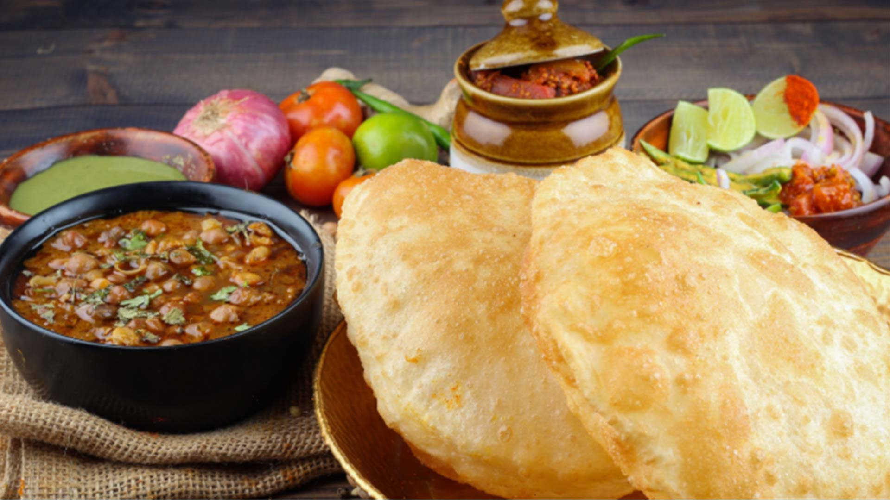
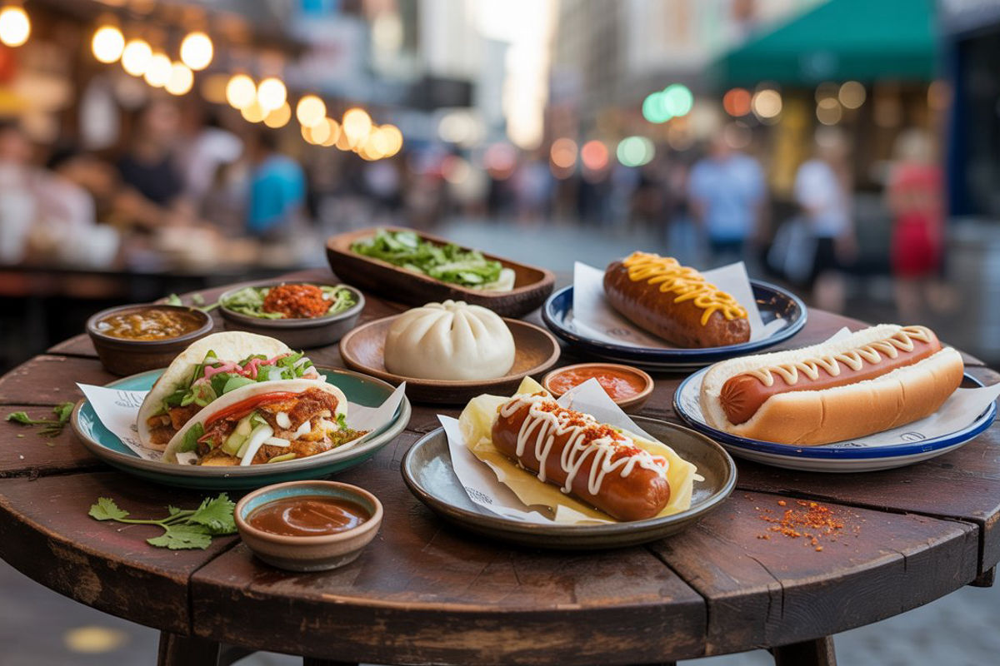
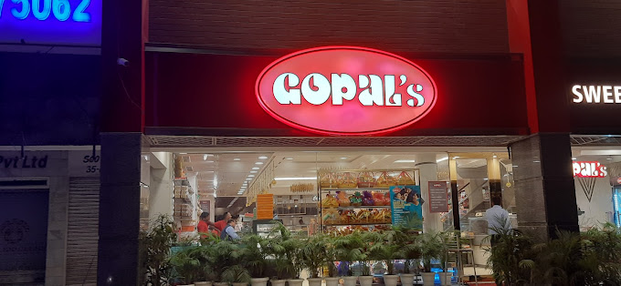

Famous Punjabi Food
Chandigarh, the “City Beautiful,” is known for its rich and flavorful Punjabi cuisine. Iconic dishes such as Butter Chicken, Dal Makhani, Paneer Tikka, and Tandoori Chicken are widely loved. Winter specialties like Sarson da Saag with Makki di Roti showcase the rustic charm of Punjabi culture, and street food favorites include Amritsari Kulcha and Chole Bhature. No Punjabi meal is complete without a glass of Lassi.

Popular Street Food (Sector 17 & 34)
Chandigarh is a paradise for street food lovers. Sector 17 and Sector 34 are bustling with food stalls offering Chaat, Aloo Tikki, Golgappas, Pav Bhaji, Momos, Parathas, and Kulchas. The lively atmosphere and delicious flavors make street food an essential part of the city’s culture.

Famous Restaurants & Cafés
Chandigarh offers a wide variety of restaurants and cafés catering to every taste. Popular spots like Black Lotus, Indian Coffee House, and cafes in Sector 26 and Sector 17 are known for food and ambiance. From authentic Punjabi meals to continental and fusion cuisines, the city offers a vibrant dining experience.

Local Sweets
Chandigarh is famous for its Punjabi sweets. Popular treats include Gulab Jamun, Jalebi, Barfi, Rasgulla, Rabri, and Pinni. Local sweet shops in Sector 17, Sector 22, and Sector 34 are well-known for their authentic taste, making them a must-visit for anyone with a sweet tooth.
